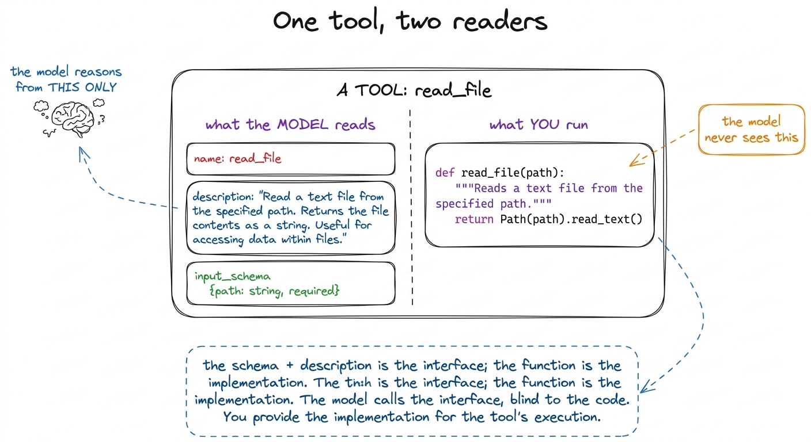
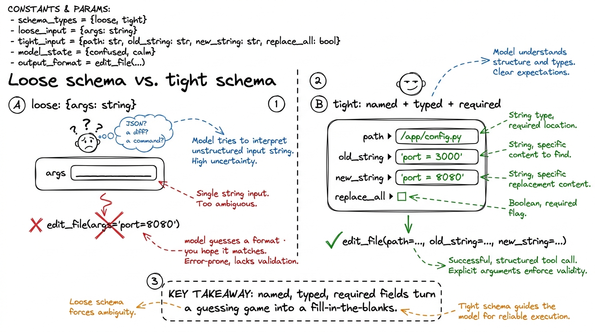
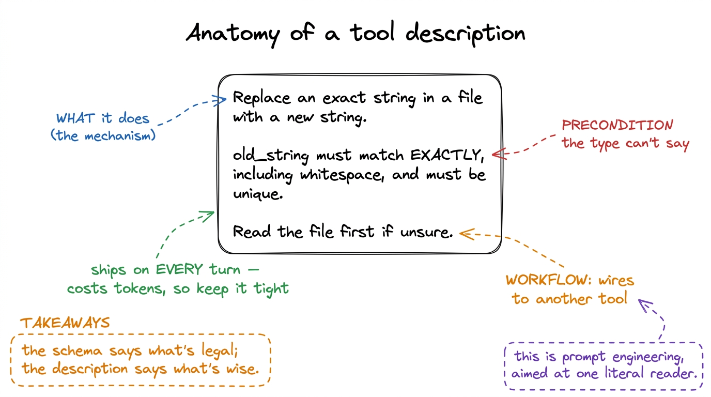
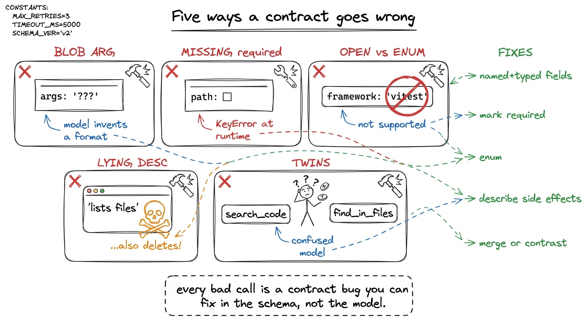

Tool schemas as contracts TOOLS
In the last chapter we gave our bare harness two tools and moved on quickly, in a hurry to see the loop turn. But look again at what we wrote for each tool: a name, a one-line description, and a little JSON blob describing the arguments. Three fields of prose and structure — and then a Python function hiding behind them. It is tempting to think the function is the tool. It isn't. The model never sees the function. It sees only those three fields, and from them alone it has to decide whether to call the tool, when, and with exactly what arguments. Those three fields are a contract, and this chapter is about writing it well — because a sloppy contract produces a sloppy agent, and no cleverness in the function behind it can fix a call that arrived malformed.
A tool has two audiences
Here is the mental shift that makes everything else click. A tool is written for two readers at once, and they read completely different halves of it — the model reasons from one half, your runtime executes the other.

figure rendering · A tool faces two readers: the model, which sees only the name, descripThe model reads the name, the description, and the input schema. That is its entire universe of knowledge about the tool. It cannot read your function's body or your comments; it has no idea whether run_bash shells out to subprocess or SSHes into a datacenter. It reasons purely from the interface you handed it. Your runtime, meanwhile, reads none of that — it receives a name and a bag of arguments and dispatches to the matching function.
This is the same interface-versus-implementation boundary that has organized software for fifty years, with one twist: the consumer of your interface is a language model reasoning in natural language, not a compiler checking types. So the contract is enforced and taught at once. The schema is the enforcement; the description is the teaching. Get both right and the model calls your tool like it wrote it. Get either wrong and you will spend your evening reading confused tool calls.
The schema is the enforcement layer
Start with the strict half. The input schema is JSON Schema — the same little language of type, properties, required, and enum you have probably seen in API validators — and providers wire it directly into the model's decoding.1 Anthropic's tool-use, OpenAI's function-calling, and Google's function declarations all use JSON Schema (or a close subset) for exactly this reason. It is the lingua franca of tool calling, which is lucky: learn it once and the lesson ports across every harness in this book. When you declare a tool with an input_schema, the model is constrained to emit arguments that fit it. A field you mark required will be present. A field you type as an integer comes back an integer, not the string "3". This is not a suggestion the model tries to honor; on modern providers it is a hard constraint on generation.
That is enormous leverage, and the craft is knowing which constraints to spend. Compare a loose schema and a tight one for the same tool.
# LOOSE — technically valid, quietly terrible
{
"name": "edit_file",
"description": "Edit a file.",
"input_schema": {
"type": "object",
"properties": {"args": {"type": "string"}}, # a blob of anything
},
}The loose version works, in that it will not error at registration. But it teaches the model nothing. args is a string — so the model has to invent a convention (JSON? a diff? a shell one-liner?) and hope your function guesses the same one. Nothing is required, so it may omit the very field you need. There are no field names to reason about, so it cannot map the user's intent onto arguments. You have handed it a form with one blank line labeled "stuff."
Now the tight version:
# TIGHT — the schema does the teaching
{
"name": "edit_file",
"description": (
"Replace an exact string in a file with a new string. "
"old_string must match the file's current contents EXACTLY, "
"including whitespace and indentation, and must be unique in the file. "
"Read the file first if you are unsure of its exact contents."
),
"input_schema": {
"type": "object",
"properties": {
"path": {"type": "string",
"description": "Absolute path to the file to edit."},
"old_string": {"type": "string",
"description": "Exact text to find. Must be unique."},
"new_string": {"type": "string",
"description": "Text to replace it with."},
"replace_all": {"type": "boolean", "default": False,
"description": "Replace every occurrence instead of one."},
},
"required": ["path", "old_string", "new_string"],
},
}Every field earns its place. Three named, typed, described arguments mean the model knows exactly what to fill in and can map "change the port to 8080" onto an old_string/new_string pair without guessing a format. The required list guarantees you never get an edit with no target. The boolean with a default offers an option the model can reach for without being forced to. And this schema is not hypothetical — it is close to the real Edit tool inside Claude Code, whose exact-match-and-unique contract exists precisely because a looser one produced ambiguous edits.2 Anthropic's own agent-building guidance calls this out directly: the more your tool's inputs mirror how the model already thinks about the task, the fewer malformed calls you get. See the Claude Code overview and Raschka's "components of a coding agent" walkthrough for the same point from two directions.

figure rendering · A loose schema forces the model to invent a format and hope it matchesThree schema levers do most of the work, so name them so you reach for them deliberately:
required decides what the model cannot forget. Mark a field required only if your function genuinely cannot proceed without it — over-requiring makes the model fabricate values to satisfy the schema, which is worse than a missing one. enum collapses an open-ended field into a closed set of valid choices, and it is the single most underused lever in tool design. If your run_tests tool only supports three frameworks, an enum of ["pytest", "jest", "go"] means the model cannot hallucinate a fourth — the constraint is enforced at generation time, not caught later in your function. And types with defaults let you offer optional behavior (a limit, a replace_all flag) without cluttering the required set. Here is the enum idea made concrete, a second tool for our harness:
{
"name": "run_tests",
"description": (
"Run the project's test suite and return pass/fail output. "
"Pick the framework matching the repo; default to pytest for Python."
),
"input_schema": {
"type": "object",
"properties": {
"framework": {
"type": "string",
"enum": ["pytest", "jest", "go"], # the model cannot invent a fourth
"description": "Test runner to use.",
},
"path": {
"type": "string",
"description": "Optional file or dir to scope the run. Omit for the whole suite.",
},
},
"required": ["framework"],
},
}The description is prompt engineering the tool
Now the softer half — and do not let "softer" fool you into thinking it is less important. The description is not documentation for humans who will never read it; it is a piece of the prompt that ships on every single turn, and the model weighs it every time it decides whether and how to call the tool. Writing a tool description is prompt engineering, aimed at an audience of one very literal reader.
Think about the three distinct jobs a good description does. First, it establishes when to reach for this tool versus another — "Read a file before editing it if you are unsure of its contents" quietly wires two tools together into a workflow. Second, it encodes the preconditions and gotchas that your schema's types cannot express: that old_string must be unique, that a path must be absolute, that a command should not be interactive. Third, it sets defaults of judgment — "default to pytest for Python" — that keep the model from dithering. None of that is expressible in a type field. All of it lives in the prose.

figure rendering · A description does three jobs the schema can't: it states the mechanisThere is a real cost to be honest about, and it is the reason descriptions must be tight, not merely thorough. Every tool's name, description, and schema are serialized into the context window on every turn.3 This is where tool design and context engineering meet. A harness with thirty verbose tools can burn thousands of tokens on tool definitions before the model has read a single line of your code — which is exactly why real harnesses lean toward a few sharp, general tools rather than a sprawl of narrow ones. pi's small tool set is a deliberate design choice, not a limitation. A vague description wastes those tokens and teaches nothing; a novel-length one wastes even more and buries the one gotcha that mattered. Aim for the density of a good docstring: one crisp sentence of what, then the one or two preconditions and defaults that actually change behavior. If you find yourself writing a paragraph, the tool is probably doing too much and wants splitting.
How bad schemas produce bad calls — the failure gallery
Once you can name the failures you start spotting them in your own tools. Almost every malformed tool call traces back to one of these, and every one is a contract bug, not a model bug.
- The blob argument. A single
args: string(orinput: objectwith no properties) forces the model to invent a serialization. It will pick one, you will parse another, and the mismatch shows up as a runtime error that looks like the model's fault but is yours. - The missing
required. You needpathbut never marked it required, so on a fast turn the model omits it and your function throwsKeyError. The schema promised nothing, so the model owed you nothing. - The open field that should be an
enum. A free-stringframeworkinvites"unittest"or"vitest"when you only support three runners. Anenumwould have made the bad value literally ungenerable. - The lying description. The prose says the tool "lists files" but the function also deletes empties as a side effect. The model reasons from the description, calls it expecting a read-only listing, and now it has destroyed state it was never warned about. A description that undersells side effects is worse than no description.
- The overlapping twins. Two tools,
search_codeandfind_in_files, with near-identical descriptions. The model cannot tell them apart and flips a coin every turn. Two tools that are hard to distinguish should be one tool, or two with sharply contrasting descriptions that say when each wins.

figure rendering · The five recurring contract bugs — blob args, missing required, open fThe through-line, plainly: when the model calls a tool wrong, fix the contract first — do not scold the model in the system prompt or bolt defensive parsing onto the function. A patch in the prompt is a plea; a fix in the schema is a guarantee, enforced at generation time. That is where the leverage is, so spend it there.
Validate anyway, and feed errors back
One honest caveat before we move on. The schema constrains generation, but it is not a force field — arguments can still arrive semantically wrong even when they are structurally valid. A path can be a perfectly well-typed string that points at a file which doesn't exist. So the runtime half of the tool still validates, and — this is the part beginners skip — when validation fails, you return the error as a tool result, back into the loop, rather than crashing.
def run_tool(name, args):
try:
if name == "read_file":
p = pathlib.Path(args["path"])
if not p.exists():
return f"ERROR: no such file: {p}. Use list_files to see what exists."
return p.read_text()
# …other tools…
except Exception as e:
return f"ERROR calling {name}: {e}" # goes back to the model, not the voidThat returned string is not a dead end; it is feedback. The model reads "no such file, use list_files", and on the next lap of the loop it corrects itself — often listing the directory and retrying with the right path, no human in between. A well-written error message is quietly one more piece of the contract: it teaches the model how to recover.4 This is the seed of self-healing loops, a whole Layer-4 idea. The tool contract and the durability layer meet right here, at the returned error string — which is why it is worth writing those error messages as if the model were a colleague you are coaching, because that is exactly what it is.
What you have, and what comes next
Step back and see what the contract bought you. With a tight schema and a sharp description, the model calls your tools with the right arguments, in the right situations, and recovers when it gets something wrong — reasoning from an interface a few lines long, blind to the code behind it. That is the whole art of tool design: you are not programming the model, you are specifying an interface so well that the correct call is the obvious one.
But we have quietly ignored a menace this whole chapter. Our run_bash tool has a beautiful contract and will happily run rm -rf / the moment the model decides that is the obvious call. A good schema makes tools usable; it does nothing to make them safe. That is the next thing we build — the permission gates and approval modes that stand between a well-formed tool call and your actual machine.